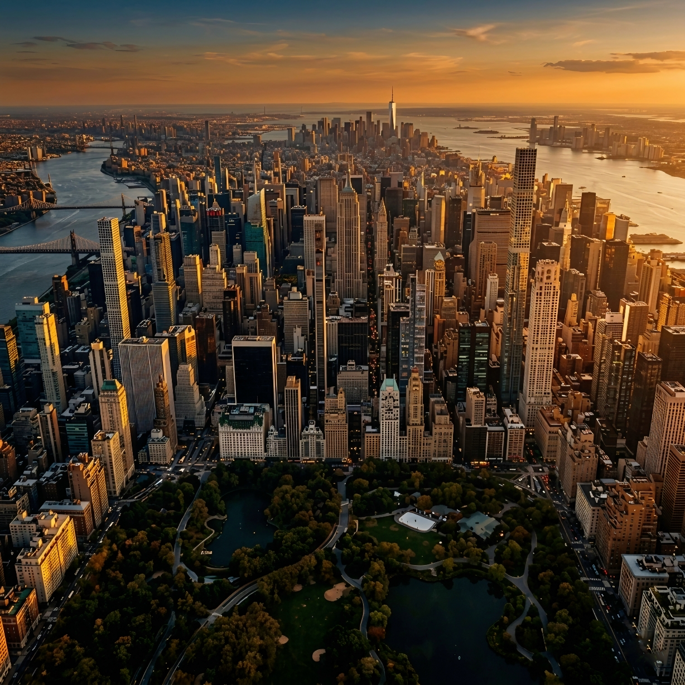
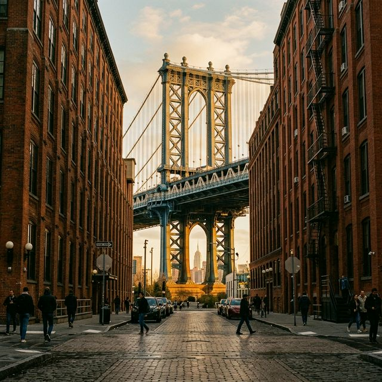
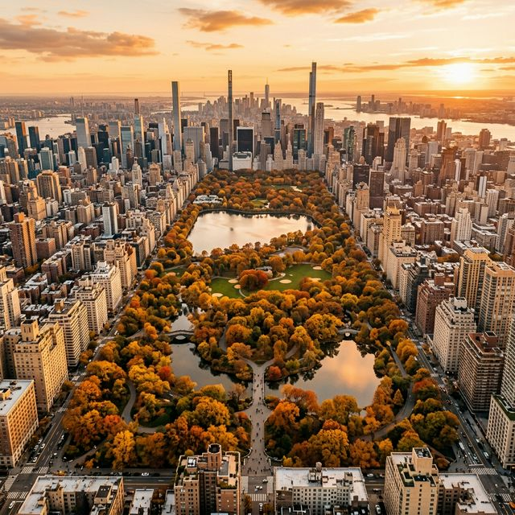
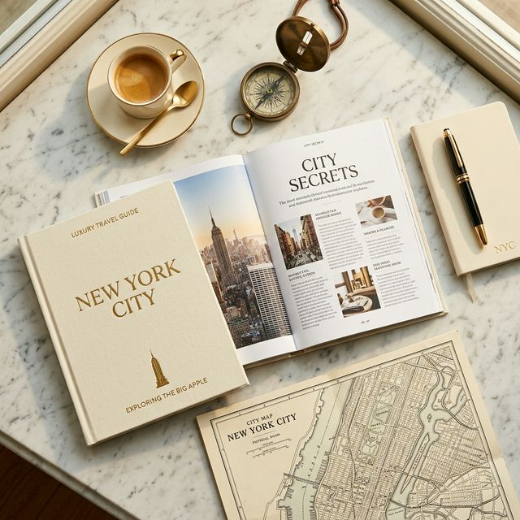

Itinerario diseñado al detalle
La forma más inteligente de recorrer la ciudad
Sobre el itinerario
Este itinerario está diseñado con una planificación detallada, optimizado para que tanto quien visita por primera vez como quien ya conoce la ciudad la disfrute de la mejor manera posible. Combina los puntos icónicos que no te podés perder con joyitas y recorridos menos comunes que suman una mirada distinta de Nueva York.
Las rutas están optimizadas para caminar, aprovechando al máximo cada paso, con traslados en subte solo cuando realmente hace falta. Cada día está planeado al milímetro: desde la vista impactante al salir de una estación de subte específica hasta terminar el día en el lugar y momento justo.
"Una forma concreta y estratégica de recorrer Nueva York, combinando lo mejor de cada zona con decisiones que marcan la diferencia."
Los recorridos
Cada recorrido está pensado para maximizar tu tiempo, con rutas que conectan los lugares de forma lógica y eficiente.
El primer impacto con la ciudad
Desde el puente de Brooklyn hasta los rincones de Chinatown. Rooftops gratuitos, playas secretas y la foto clásica del Manhattan Bridge.
Paseo y compras
Union Square, el Flatiron, Empire State, la Biblioteca Pública y Bryant Park. Cerrás el día en un rooftop con vista al skyline.
Distrito histórico
Memorial del 11-S, el Oculus, Federal Hall, el Toro de Wall Street y ferry a Brooklyn. Historia, arquitectura y emoción.
Hasta Times Square
Little Island, Chelsea Market, el High Line completo, Hudson Yards y terminás en Times Square desde un rooftop secreto.
Ferry y compras
Ferry gratuito con vistas de la Estatua de la Libertad, compras en Empire Outlets y vuelta por el río hasta Manhattan.
Y rascacielos
Grand Central, Summit One Vanderbilt, Chrysler Building, la Quinta Avenida y Rockefeller Center. Arquitectura al máximo.
Con miradores gratis
El MET, Bethesda, Bow Bridge, Strawberry Fields y Columbus Circle. Un recorrido que te muestra el parque de verdad.
Barrios con carácter
Arte urbano, calles de adoquines, el Friends apartment, Washington Square y la esencia bohemia de Greenwich Village.
Menos turístico
Central Park Norte, Columbia University, la catedral más grande y The Cloisters: un museo medieval fuera del mapa.

Rutas optimizadas
Las rutas están diseñadas para aprovechar al máximo cada paso. Solo usás el subte cuando realmente hace falta, lo que permite descubrir rincones que otros pasan de largo, y ahorrás en transporte sin sacrificar nada del recorrido.

Todo pensado
Desde la vista impactante al salir de una estación de subte específica hasta terminar el día en el lugar y momento justo. Cada parada, cada giro, cada decisión está pensada para que tu experiencia sea completa.

Más que turismo
No es solo un listado de lugares. Es una forma de entender la ciudad: curiosidades históricas, datos de arquitectura, spots para fotos únicas y recomendaciones que no vas a encontrar en ninguna guía convencional.
¿Por qué VAN NY?
Cada elemento del itinerario fue pensado para resolver un problema real que tiene cualquier viajero en Nueva York.
Cada recorrido tiene su mapa con paradas estratégicas y gastronómicas marcadas. Los lugares prioritarios de comida están destacados para que sepas dónde conviene parar.
Accedé a terrazas y miradores que la mayoría no conoce, sin pagar entrada, con vistas panorámicas de Manhattan, Brooklyn y más.
Baños limpios y poco concurridos distribuidos a lo largo de todos los recorridos, algunos con detalles sorprendentes como vistas increíbles.
Lugares escondidos y menos transitados para sacarte fotos fuera de lo común, lejos de las aglomeraciones turísticas típicas.
Recomendaciones de lugares donde comés bien sin gastar de más. Los restaurantes prioritarios están marcados con ícono especial en el mapa.
Cada recorrido indica el clima ideal: soleado, nublado o lluvioso. Reorganizás tus días según el pronóstico sin perder nada.
Las zonas de compras están ubicadas al final de cada recorrido para que no andes cargando bolsas durante todo el paseo.
Guía completa de museos con sus días y horarios de entrada gratuita. Lotería de Broadway, eventos gratuitos y más recursos incluidos.
Está pensado para equilibrar caminata, compras y descanso, con opciones para días soleados, nublados o de lluvia. Es una forma concreta y estratégica de recorrer Nueva York, combinando lo mejor de cada zona con decisiones que marcan la diferencia.
¿Qué incluye?
Rutas detalladas día a día con descripciones de cada punto, indicaciones de subte y distancias.
Mapa personalizado con todos los recorridos, paradas, restaurantes y puntos de interés marcados.
Museos principales con días y horarios de entrada gratuita o con descuento.
Outlets, tips de compras, cómo llegar y días recomendados para cada centro.
Ferries, Broadway, eventos gratuitos, actividades de la semana y más recursos actualizados.
Niveles de intensidad, clima ideal y extensiones opcionales para personalizar cada día.
Obtené tu itinerario
Itinerario completo
Pago único · Acceso inmediato
🔒 Pago seguro · Recibís el itinerario al instante
Preguntas frecuentes
Inmediatamente después de realizar el pago, recibís acceso al itinerario completo en formato digital. Incluye todos los recorridos, el mapa interactivo y los recursos adicionales.
No necesariamente. Cada recorrido indica el clima ideal, así que podés reorganizar los días según el pronóstico. El itinerario te da la flexibilidad de adaptarte sin perder nada.
Sí. Además de los puntos clásicos, el itinerario incluye spots poco conocidos, rooftops gratuitos, accesos secretos y datos que no vas a encontrar en guías comunes. Incluso si ya fuiste, vas a descubrir cosas nuevas.
El itinerario tiene 9 recorridos principales más días de shopping opcionales. Podés adaptarlo según la duración de tu viaje: si tenés menos días, priorizás los recorridos que más te interesen usando las indicaciones de intensidad y clima.
El mapa interactivo funciona con conexión a internet. Te recomendamos descargarlo en tu dispositivo antes de salir del hotel o conectarte al WiFi de cualquier Starbucks o biblioteca pública para recargarlo.
El itinerario detalla qué atracciones son gratuitas, cuáles requieren entrada y sus costos aproximados. También incluye los precios de ferry y transporte cuando aplica. Muchas de las recomendaciones son justamente para aprovechar accesos gratuitos.